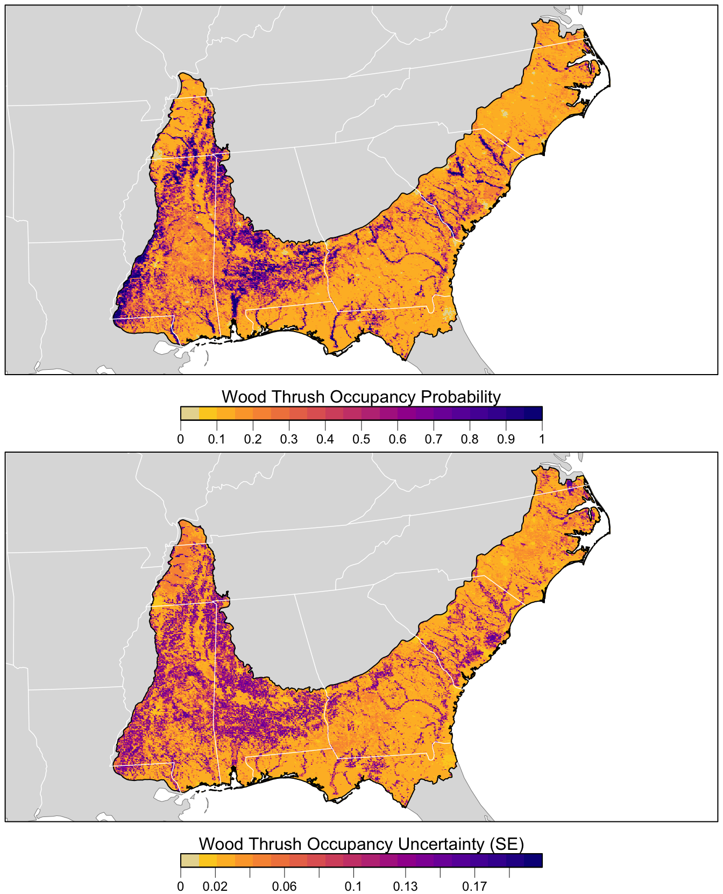

Chapter 5 Modeling Occupancy
5.1 Introduction
In this chapter, we’ll cover basic initial steps for applying occupancy models to eBird data. In Chapter 4, we used analytical approaches that accounted for variation in detectability. We modeled covariates that are known to influence detectability (e.g. duration, time of day) alongside covariates that influence occurrence. In contrast, occupancy models jointly model the ecological process of species occurrence and the observation process of species detection, but estimate these as separate processes. This modeling framework allows us to account for variation in detection probability when estimating species occurrence. In this chapter, we will not provide much detail on the theory and assumptions of occupancy models; however, there is a wealth of background literature and applications of occupancy models, and readers wishing to learn more about this field may want to consult the book on the topic by MacKenzie et al. (2017).
The application of occupancy models typically requires data from repeated sampling visits (occasions) to a single site during a time frame over which the population is closed (e.g., no changes in occupancy between surveys). Although eBird checklists are not designed to meet these requirements, it is possible to apply occupancy models to eBird data by extracting a subset of the data that meet closure assumptions and conform to a repeat-sampling data structure. Here, we present a simple example of how to process eBird data to meet these requirements. To illustrate our example, we apply a single-season occupancy model to estimate occupancy and detection probabilities for Wood Thrush in the month of June for BCR 27.
This chapter differs from the previous chapter on modeling encounter rate in two important ways. First, the random forest model used in Chapter 4 is an example of a machine learning approach, while the occupancy models used in this chapter use a more traditional likelihood approach. This latter class of statistical models are widely used for addressing specific questions and hypotheses, while the goal of machine learning is primarily to identify patterns and make predictions (Bzdok, Altman, and Krzywinski 2018). Second, machine learning approaches can accommodate complex non-linear effects and interactions between covariates, and are useful when modeling habitat associations that can vary across large spatial and temporal scales. In contrast, occupancy models are well suited for describing linear effects and simpler interactions. In this example, we specifically focus on the mechanics of filtering and formatting the data to fit occupancy models, and less on the specifics of how to choose suitable predictor variables for estimating detection and occupancy probabilities to generate a candidate model set used for model selection. The predictors we do include are informed by our inferences on variable importance scores from the random forest model in Chapter 4, as well as our existing knowledge of the species being modeled.
If you worked through the previous chapters, you should have all the data necessary for this chapter. You can also download the data package, and unzip it to your project directory.
library(auk)
library(lubridate)
library(sf)
library(dggridR)
library(unmarked)
library(raster)
library(ebirdst)
library(MuMIn)
library(AICcmodavg)
library(fields)
library(tidyverse)
# resolve namespace conflicts
select <- dplyr::select
projection <- raster::projection
# set random number seed to insure fully repeatable results
set.seed(1)
# setup output directory for saved results
if (!dir.exists("output")) {
dir.create("output")
}
# ebird data
ebird <- read_csv("data/ebd_woothr_june_bcr27_zf.csv") %>%
mutate(year = year(observation_date),
# occupancy modeling requires an integer response
species_observed = as.integer(species_observed))
# modis land cover covariates
habitat <- read_csv("data/pland-elev_location-year.csv") %>%
mutate(year = as.integer(year))
# combine ebird and modis data
ebird_habitat <- inner_join(ebird, habitat, by = c("locality_id", "year"))
# prediction surface
pred_surface <- read_csv("data/pland-elev_prediction-surface.csv")
# latest year of landcover data
max_lc_year <- pred_surface$year[1]
r <- raster("data/prediction-surface.tif")
# load gis data for making maps
map_proj <- st_crs(102003)
ne_land <- read_sf("data/gis-data.gpkg", "ne_land") %>%
st_transform(crs = map_proj) %>%
st_geometry()
bcr <- read_sf("data/gis-data.gpkg", "bcr") %>%
st_transform(crs = map_proj) %>%
st_geometry()
ne_country_lines <- read_sf("data/gis-data.gpkg", "ne_country_lines") %>%
st_transform(crs = map_proj) %>%
st_geometry()
ne_state_lines <- read_sf("data/gis-data.gpkg", "ne_state_lines") %>%
st_transform(crs = map_proj) %>%
st_geometry()5.2 Data preparation
First, will extract a subset of the eBird data that meets the assumptions of occupancy models, and then we perform spatiotemporal subsampling to deal with spatial bias in the data.
Let’s start by filtering our data to include only checklists with 5 or fewer observers, to reduce sources of variation in detectability, and because there are very few checklists with more than 5 observers. In addition, we’ll subset observations to the most recent year for which we have data (2019) to fit a single-season occupancy model.
# filter prior to creating occupancy model data
ebird_filtered <- filter(ebird_habitat,
number_observers <= 5,
year == max(year))In some situations, you may want to further filter the data based on the results of an exploratory analysis similar to the one conducted in Section 2.5. Even though most of the checklists in this example are submitted by 2 or fewer observers, we won’t further filter the observations for our occupancy example. Given the extra constraints for data suitable for occupancy modeling, it may be useful to retain more checklists at this stage.
5.2.1 Data formatting
Next, we need to create detection histories for each location we define as a site. In this example, we define the month of June as the time period over which we assume that there are no changes in occupancy between secondary sampling occasions for Wood Thrush in BCR 27. The time frame over which closure can be assumed will differ among species and localities, requires careful consideration. We define a site as a specific location (latitude/longitude) that is visited at least twice by the same observer within our defined period of closure (i.e. the month of June).
The auk function filter_repeat_visits() is designed to extract a subset of eBird data suitable for occupancy modeling. Using the function, we first filter the data to only sites that have at least 2 visits (min_obs). We also define the maximum number of repeat visits (max_obs) as 10 visits or checklists. When a specific site has been visited more than 10 times, the function will randomly select 10 checklists from all the visits to that site. If we had data from more than one year, we would use annual_closure = TRUE to determine that populations are closed within the specified time frame for a given year, but not closed between years. In other words, species occurrence does not change from one repeat visit to the next for a given sampling event (e.g. year), but can change between years. If we want to define periods of closure within years, we can define these in terms of the number of days using n_days. For example, n_days = 10 would define contiguous sets of 10 days, starting with the earliest observation date in the data, and use these as consecutive periods of closure. Here we don’t define n_days and treat all the June 2019 checklists as repeat visits during a single season. Finally, site_vars specifies the set of variables that defines a site. In this example, a site is defined jointly by the location and observer IDs. Any set of variables in the data can be used to define sites. For example, site_vars = "locality_id" could be used to define sites using the location regardless of observer.
occ <- filter_repeat_visits(ebird_filtered,
min_obs = 2, max_obs = 10,
annual_closure = TRUE,
date_var = "observation_date",
site_vars = c("locality_id", "observer_id"))
# entire data set
nrow(ebird_habitat)
#> [1] 48445
# reduced data set
nrow(occ)
#> [1] 3724
# number of individual sites
n_distinct(occ$site)
#> [1] 988This function filter_repeat_visits() added three new columns to the dataset: site is a unique site ID (here, location and observer), closure_id identifies the primary period of closure (in this example the year), and n_observations is the number of visits to each site. Our capture histories are now properly formatted for a single-season occupancy model and ready to be analyzed. Note that we’ve made a trade off in sample size, dropping from 10,414 checklists to 3,724 checklists over 988 sites.
We’ll use our filtered observations to fit a single-season occupancy model using the unmarked R package. For additional details on the type of data format required for this package, consult the documentation for the unmarked function formatWide(). The auk function format_unmarked_occu() converts data from a vertical format in which each row is an observation (as in the EBD) to a horizontal detection history where each row is a site. Under this format, each column represent a repeat visit- for this example, we will have up to 10 detection event columns. This data format is commonly used for most applications of occupancy model, including unmarked.
At this stage, we need to specify which variables will be ecological process (i.e. occupancy) covariates and which will be observational process (i.e. detection) covariates. Occupancy covariates (site_covs) will be unique at the level of the site, while detection covariates (obs_covs) can be also be unique for each site, as well as sampling occasion (i.e. checklist).
For this example, we’ll use MODIS land cover variables as habitat covariates for modeling the occupancy probability of Wood Thrush. Based on predictor importance measures from Chapter 4, we include deciduous broadleaf forest and mixed forest as habitat types for which we expect positive relationships with occupancy, and croplands and urban, for which we expect negative relationships.
To estimate detection probability, we include three effort variables that are related to the detection process. Habitat type has been shown to influence detectability in bird species, for example, some species are harder to detect in densely forested habitats relative to more open habitat types. So we also include deciduous broadleaf forest and mixed forest as covariates for detection probability. Occupancy models allow us to tease apart the differing effects of habitat on both detection and occupancy probabilities.
# format for unmarked
occ_wide <- format_unmarked_occu(occ,
site_id = "site",
response = "species_observed",
site_covs = c("n_observations",
"latitude", "longitude",
"pland_04_deciduous_broadleaf",
"pland_05_mixed_forest",
"pland_12_cropland",
"pland_13_urban"),
obs_covs = c("time_observations_started",
"duration_minutes",
"effort_distance_km",
"number_observers",
"protocol_type",
"pland_04_deciduous_broadleaf",
"pland_05_mixed_forest"))5.2.2 Spatial subsampling
As discussed in Section 4.3, spatial subsampling of eBird observations reduces spatial bias. We’ll use the same hexagonal subsampling approach as in Chapter 4; however, here we’ll subsample at the level of sites rather than observations. For this example, we will sample one site per 5 km grid cell. Note, that because we included observer_id in the site definition, this subsampling process will only select one row, or set of visits from one observer to one site, within each 5km cell.
# generate hexagonal grid with ~ 5 km between cells
dggs <- dgconstruct(spacing = 5)
# get hexagonal cell id for each site
occ_wide_cell <- occ_wide %>%
mutate(cell = dgGEO_to_SEQNUM(dggs, longitude, latitude)$seqnum)
# sample one site per grid cell
occ_ss <- occ_wide_cell %>%
group_by(cell) %>%
sample_n(size = 1) %>%
ungroup() %>%
select(-cell)
# calculate the percent decrease in the number of sites
1 - nrow(occ_ss) / nrow(occ_wide)This resulted in a 41% decrease in the number of sites.
5.2.3 unmarked object
Finally, we’ll convert this data frame of observations into an unmarked object so we can start fitting occupancy models.
occ_um <- formatWide(occ_ss, type = "unmarkedFrameOccu")
summary(occ_um)
#> unmarkedFrame Object
#>
#> 584 sites
#> Maximum number of observations per site: 10
#> Mean number of observations per site: 3.86
#> Sites with at least one detection: 64
#>
#> Tabulation of y observations:
#> 0 1 <NA>
#> 2125 128 3587
#>
#> Site-level covariates:
#> n_observations latitude longitude pland_04_deciduous_broadleaf pland_05_mixed_forest
#> Min. : 2.00 Min. :29.7 Min. :-91.4 Min. :0.000 Min. :0.000
#> 1st Qu.: 2.00 1st Qu.:31.2 1st Qu.:-85.6 1st Qu.:0.000 1st Qu.:0.000
#> Median : 2.00 Median :33.1 Median :-81.4 Median :0.000 Median :0.000
#> Mean : 3.86 Mean :33.2 Mean :-82.0 Mean :0.052 Mean :0.047
#> 3rd Qu.: 5.00 3rd Qu.:35.1 3rd Qu.:-78.3 3rd Qu.:0.000 3rd Qu.:0.000
#> Max. :10.00 Max. :37.4 Max. :-75.5 Max. :1.000 Max. :1.000
#> pland_12_cropland pland_13_urban
#> Min. :0.000 Min. :0.000
#> 1st Qu.:0.000 1st Qu.:0.000
#> Median :0.000 Median :0.000
#> Mean :0.025 Mean :0.159
#> 3rd Qu.:0.000 3rd Qu.:0.203
#> Max. :1.000 Max. :1.000
#>
#> Observation-level covariates:
#> time_observations_started duration_minutes effort_distance_km number_observers protocol_type
#> Min. : 0 Min. : 1 Min. :0 Min. :1 Length:5840
#> 1st Qu.: 8 1st Qu.: 16 1st Qu.:0 1st Qu.:1 Class :character
#> Median :10 Median : 35 Median :0 Median :1 Mode :character
#> Mean :12 Mean : 53 Mean :1 Mean :1
#> 3rd Qu.:16 3rd Qu.: 70 3rd Qu.:1 3rd Qu.:1
#> Max. :24 Max. :300 Max. :5 Max. :4
#> NA's :3587 NA's :3587 NA's :3587 NA's :3587
#> pland_04_deciduous_broadleaf pland_05_mixed_forest
#> Min. :0 Min. :0
#> 1st Qu.:0 1st Qu.:0
#> Median :0 Median :0
#> Mean :0 Mean :0
#> 3rd Qu.:0 3rd Qu.:0
#> Max. :1 Max. :1
#> NA's :3587 NA's :35875.3 Occupancy modeling
Now that we’ve created a data frame with detection histories and covariates, we can use unmarked to fit a single-season occupancy model. As mentioned above, readers can discover more about occupancy models and the variety of modeling approaches in MacKenzie et al. (2017). Here, we simply fit a single-season occupancy model to our data using the occu() function, specifying the detection and occupancy covariates, respectively, via a double right-hand sided formula of the form ~ detection covariates ~ occupancy covariates.
# fit model
occ_model <- occu(~ time_observations_started +
duration_minutes +
effort_distance_km +
number_observers +
protocol_type +
pland_04_deciduous_broadleaf +
pland_05_mixed_forest
~ pland_04_deciduous_broadleaf +
pland_05_mixed_forest +
pland_12_cropland +
pland_13_urban,
data = occ_um)
# look at the regression coefficients from the model
summary(occ_model)
#>
#> Call:
#> occu(formula = ~time_observations_started + duration_minutes +
#> effort_distance_km + number_observers + protocol_type + pland_04_deciduous_broadleaf +
#> pland_05_mixed_forest ~ pland_04_deciduous_broadleaf + pland_05_mixed_forest +
#> pland_12_cropland + pland_13_urban, data = occ_um)
#>
#> Occupancy (logit-scale):
#> Estimate SE z P(>|z|)
#> (Intercept) -2.030 0.231 -8.773 1.74e-18
#> pland_04_deciduous_broadleaf 6.742 1.958 3.442 5.77e-04
#> pland_05_mixed_forest 0.889 0.789 1.126 2.60e-01
#> pland_12_cropland -1.116 1.906 -0.586 5.58e-01
#> pland_13_urban -2.011 0.968 -2.078 3.77e-02
#>
#> Detection (logit-scale):
#> Estimate SE z P(>|z|)
#> (Intercept) -1.24620 0.56367 -2.211 0.02704
#> time_observations_started -0.00505 0.02993 -0.169 0.86592
#> duration_minutes 0.00650 0.00317 2.053 0.04005
#> effort_distance_km -0.25544 0.13388 -1.908 0.05639
#> number_observers 0.16704 0.30811 0.542 0.58773
#> protocol_typeTraveling 0.84136 0.38631 2.178 0.02941
#> pland_04_deciduous_broadleaf -0.77822 0.53981 -1.442 0.14940
#> pland_05_mixed_forest 2.87185 1.00784 2.849 0.00438
#>
#> AIC: 691
#> Number of sites: 584
#> optim convergence code: 0
#> optim iterations: 67
#> Bootstrap iterations: 05.3.1 Assessment
Although few goodness-of-fit tests exist for occupancy models, we demonstrate how to perform the MacKenzie and Bailey (2004) goodness-of-fit test. This approach calculates a Pearson’s chi-square fit statistic from the observed and expected frequencies of detection histories for a given model. For this example, we use the mb.gof.test() test function in the AICcmodavg package, which can handle occupancy models produced by the occu() function in unmarked. Note that to produce accurate results, this process requires simulating a large number of bootstrap samples, which can take a long time to run. To keep the execution times reasonable, we set nsim = 10 to simulate 10 samples for this example; however, when running this under regular circumstances, you should increase this to a much higher number of simulations (e.g., nsim = 1000).
occ_gof <- mb.gof.test(occ_model, nsim = 10, plot.hist = FALSE)
# hide the chisq table to give simpler output
occ_gof$chisq.table <- NULL
print(occ_gof)#>
#> MacKenzie and Bailey goodness-of-fit for single-season occupancy model
#>
#> Chi-square statistic = 1555
#> Number of bootstrap samples = 1000
#> P-value = 0.621
#>
#> Quantiles of bootstrapped statistics:
#> 0% 25% 50% 75% 100%
#> 537 1387 1715 2254 35800
#>
#> Estimate of c-hat = 0.73For this example, the probability of getting the calculated chi-square statistic under a null sampling distribution is indicated by the p-value of 0.621. As p > 0.1 there is no reason to consider a lack of fit. We also get an estimate of the overdispersion parameter (c-hat) for the model, which is derived by dividing the observed chi-square statistic by the mean of the statistics obtained from simulation. In this example, c-hat = 0.73, which is very close to c-hat = 1, indicating that the variance is not greater than the mean, and that there is no evidence for overdispersion. Again, under regular circumstances we would want to run many more simulations, but based on this smaller run, the test statistics suggest that there is no evidence of lack of fit of this model to these data. For more details on this test, see MacKenzie and Bailey (2004).
5.3.2 Model selection
So far, we have a single global model that includes all of the covariates we believe will influence the occupancy and detection probabilities. In general, we suggest that careful consideration be used when choosing the set of candidate models to be run and compared during model selection. In this example, we will use the dredge() function to generate a set of candidate models using different combinations of the covariates in the global model. This does take some time to run, and hence recommend choosing carefully candidate model sets instead of this approach.
# dredge all possible combinations of the occupancy covariates
occ_dredge <- dredge(occ_model)
# model comparison to explore the results for occupancy
mc <- select(occ_dredge, starts_with("psi(p"), df, AICc, delta, weight)
# shorten names for printing
names(mc) <- names(mc) %>%
str_extract("(?<=psi\\(pland_[0-9]{2}_)[a-z_]+") %>%
coalesce(names(mc))
# take a quick peak at the model selection table
mutate_all(mc, ~ round(., 3)) %>%
head(18) %>%
knitr::kable()| deciduous_broadleaf | mixed_forest | cropland | urban | df | AICc | delta | weight |
|---|---|---|---|---|---|---|---|
| 6.07 | -2.12 | 6 | 685 | 0.000 | 0.027 | ||
| 5.91 | -2.14 | 8 | 685 | 0.117 | 0.026 | ||
| 7.03 | -2.09 | 9 | 685 | 0.304 | 0.023 | ||
| 6.13 | -2.12 | 7 | 685 | 0.725 | 0.019 | ||
| 5.84 | 0.930 | -1.99 | 7 | 685 | 0.726 | 0.019 | |
| 5.61 | 0.901 | -2.02 | 9 | 686 | 0.936 | 0.017 | |
| 6.83 | 0.920 | -1.96 | 10 | 686 | 1.110 | 0.016 | |
| 6.71 | -2.09 | 7 | 686 | 1.392 | 0.014 | ||
| 6.03 | -2.15 | 6 | 686 | 1.456 | 0.013 | ||
| 5.91 | -1.26 | -2.18 | 7 | 686 | 1.518 | 0.013 | |
| 5.73 | -1.31 | -2.21 | 9 | 686 | 1.605 | 0.012 | |
| 5.90 | 0.878 | -1.99 | 8 | 686 | 1.608 | 0.012 | |
| 5.98 | -2.13 | 7 | 686 | 1.642 | 0.012 | ||
| 6.94 | -2.08 | 8 | 686 | 1.701 | 0.012 | ||
| 6.87 | -1.28 | -2.15 | 10 | 686 | 1.825 | 0.011 | |
| 6.05 | -2.12 | 7 | 687 | 2.018 | 0.010 | ||
| 6.06 | -2.12 | 7 | 687 | 2.020 | 0.010 | ||
| 5.90 | -2.14 | 9 | 687 | 2.048 | 0.010 |
The corrected Akaike Information Criterion (AICc) measures the likelihood of each model to have generated the data we observed, adjusted for the number of parameters in the model. Lower values indicate models with a better fit to the data, penalizing for the added number of parameters. Delta is the difference in AICc values between the given model and the model that is most likely to have generated the data (i.e. the one with the lowest AICc), and is a relative measure conditional on the candidate set of models. Finally, the AIC weight is a transformation of delta that can be interpreted as the probability that the given model is the most likely one of the candidate models to have generated the data, and is also conditional on the candidate model set.
A quick look at the results of dredging, focusing on visualizing what covariates most influence occupancy probability, reveals that for the Wood Thrush example there is not a clear single model, or even a small set of models, that are most likely to have generated our data. This is evident from the number of models that all fall within a delta AICc value of ~2-3, and the large number of models with moderate AIC weights. Given this, and the fact that all of our effects are linear and use the same family and link function, we’ll average across all models, weighted by AICc, to produce a model-averaged prediction. However, there may be scenarios in which there is a clear set of high performing models, in which case you can use the get.models() function to extract just these models prior to averaging. For the sake of efficiency, we’ll only average the top models, which we’ll define as those cumulatively comprising 95% of the weights. This will trivially impact the results since the models with lower support have very small weights and therefore contribute little to the weighted-average predictions.
# select models with the most support for model averaging (less than 2.5 Delta AICc)
occ_dredge_Delta <- get.models(occ_dredge, subset = delta <= 2.5)
# average models based on model weights
occ_avg <- model.avg(occ_dredge_Delta, fit = TRUE)
# model averaged coefficients for occupancy and detection probability
coef(occ_avg)
#> psi(Int) psi(pland_04_deciduous_broadleaf) psi(pland_13_urban)
#> -1.93233 6.22730 -2.09076
#> p(Int) p(duration_minutes) p(pland_05_mixed_forest)
#> -1.14106 0.00605 3.15134
#> p(effort_distance_km) p(protocol_typeTraveling) p(pland_04_deciduous_broadleaf)
#> -0.20838 0.62231 -0.64714
#> psi(pland_05_mixed_forest) psi(pland_12_cropland) p(time_observations_started)
#> 0.91570 -1.25987 -0.00217
#> p(number_observers)
#> 0.10505In this table, the psi() coefficients are from the occupancy submodel and the p() coefficients are from the detection submodel. based on these results, we see that an increase in deciduous broadleaf forest has a much stronger effects on occupancy probability than an increase in mixed forest. As expected, an increase in percentage of urban area and cropland both decrease occupancy probability.
5.3.3 Exploring the effects of covariates on detection probability
A unique feature of occupancy models, is that we can investigate whether certain covariates specifically influence detection probability separately from any influencing occurrence, which wasn’t possible using the machine learning approach in Chapter 4. Specifically, we have already seen that the habitat covariates influence occupancy, but we can assess how these covariates affect detection probability using the same model averaging results that we generated above, conditional on a bird being present and potentially detected. We included deciduous broadleaf forest (pland_04) and mixed forest (pland_05) as detection covariates in the global model.
# model comparison to explore the results for detection
md <- select(occ_dredge, starts_with("p("), df, AICc, delta, weight)
# shorten names for printing
names(md) <- names(md) %>%
str_extract("(?<=p\\(pland_[0-9]{2}_)[a-z_]+") %>%
coalesce(names(md))
# take a quick peak at the model selection table
md[1:18,]
#> p(Int) p(duration_minutes) p(effort_distance_km) p(number_observers) deciduous_broadleaf mixed_forest
#> 1170 -1.079 0.00573 NA NA NA 3.20
#> 1204 -1.294 0.00683 -0.2112 NA NA 3.26
#> 1212 -1.181 0.00681 -0.2436 NA -0.734 3.15
#> 1202 -1.243 0.00465 NA NA NA 3.36
#> 1426 -1.030 0.00561 NA NA NA 3.00
#> 1460 -1.236 0.00680 -0.2152 NA NA 3.06
#> 1468 -1.129 0.00676 -0.2444 NA -0.749 2.95
#> 1178 -0.987 0.00567 NA NA -0.420 3.12
#> 1201 -1.039 NA NA NA NA 3.23
#> 1682 -1.070 0.00569 NA NA NA 3.19
#> 1716 -1.286 0.00678 -0.2123 NA NA 3.24
#> 1458 -1.185 0.00459 NA NA NA 3.15
#> 1172 -1.046 0.00678 -0.0664 NA NA 3.14
#> 1210 -1.144 0.00438 NA NA -0.543 3.26
#> 1724 -1.176 0.00678 -0.2438 NA -0.733 3.13
#> 1234 -1.141 0.00585 NA NA NA 3.22
#> 1174 -1.133 0.00568 NA 0.0508 NA 3.19
#> 1208 -1.414 0.00674 -0.2155 0.1105 NA 3.21
#> p(protocol_type) p(time_observations_started) df AICc delta weight
#> 1170 <NA> NA 6 685 0.000 0.02724
#> 1204 + NA 8 685 0.117 0.02570
#> 1212 + NA 9 685 0.304 0.02340
#> 1202 + NA 7 685 0.725 0.01896
#> 1426 <NA> NA 7 685 0.726 0.01895
#> 1460 + NA 9 686 0.936 0.01706
#> 1468 + NA 10 686 1.110 0.01564
#> 1178 <NA> NA 7 686 1.392 0.01358
#> 1201 + NA 6 686 1.456 0.01316
#> 1682 <NA> NA 7 686 1.518 0.01275
#> 1716 + NA 9 686 1.605 0.01221
#> 1458 + NA 8 686 1.608 0.01219
#> 1172 <NA> NA 7 686 1.642 0.01199
#> 1210 + NA 8 686 1.701 0.01164
#> 1724 + NA 10 686 1.825 0.01094
#> 1234 <NA> 0.00519 7 687 2.018 0.00993
#> 1174 <NA> NA 7 687 2.020 0.00992
#> 1208 + NA 9 687 2.048 0.00978From these results, it’s clear that several of our effort covariates did not influence detection probability- mainly protocol type and the number of observers. However, including habitat covariates–especially mixed forest–influenced detection probability, as observed by the differences in AIC and the AIC weights for the models that include this covariate. Let’s look at the model averaged coefficients to see how they’re impacting detection and occupancy.
coef(occ_avg) %>%
enframe()
#> # A tibble: 13 x 2
#> name value
#> <chr> <dbl>
#> 1 psi(Int) -1.93
#> 2 psi(pland_04_deciduous_broadleaf) 6.23
#> 3 psi(pland_13_urban) -2.09
#> 4 p(Int) -1.14
#> 5 p(duration_minutes) 0.00605
#> 6 p(pland_05_mixed_forest) 3.15
#> # … with 7 more rowsAgain, the psi() coefficients are from the occupancy submodel and the p() coefficients are from the detection submodel. For detection probability, we see that although deciduous forest increases occupancy probability for Wood Thrush, it decreases detection probability, since birds are harder to see and hear in dense forest. However, mixed forest positively influences both, occupancy and detection probability. The ability to tease apart the differing effects that covariates have on detection and occupancy is one of the strengths of occupancy modeling.
5.4 Prediction
In this section, we’ll estimate the distribution of Wood Thrush in BCR 27. Similar to Section 3.4, we’ll generate a prediction surface using the PLAND land cover covariates summarized on a regular grid of points across BCR 27. For this, we’ll use the predict() function to estimate occupancy probabilities, standard errors, and confidence intervals. We will use predict() on the output of model.avg() to make predictions using the model averaged coefficients from the candidate model set with at least a 95% cumulative AIC weight.
# note: the code below can take up to an hour to run!
occ_pred <- predict(occ_avg,
newdata = as.data.frame(pred_surface),
type = "state")
# add to prediction surface
pred_occ <- bind_cols(pred_surface,
occ_prob = occ_pred$fit,
occ_se = occ_pred$se.fit) %>%
select(latitude, longitude, occ_prob, occ_se)Next, we’ll convert this data frame to spatial features using sf, then rasterize the points using the prediction surface raster template.
r_pred <- pred_occ %>%
# convert to spatial features
st_as_sf(coords = c("longitude", "latitude"), crs = 4326) %>%
st_transform(crs = projection(r)) %>%
# rasterize
rasterize(r)
r_pred <- r_pred[[c("occ_prob", "occ_se")]]
# save the raster
tif_dir <- "output"
if (!dir.exists(tif_dir)) {
dir.create(tif_dir)
}
writeRaster(r_pred[["occ_prob"]],
filename = file.path(tif_dir, "occupancy-model_prob_woothr.tif"),
overwrite = TRUE)
writeRaster(r_pred[["occ_se"]],
filename = file.path(tif_dir, "occupancy-model_se_woothr.tif"),
overwrite = TRUE)Finally, we can map these predictions!
# project predictions
r_pred_proj <- projectRaster(r_pred, crs = map_proj$proj4string, method = "ngb")
par(mfrow = c(2, 1))
for (nm in names(r_pred)) {
r_plot <- r_pred_proj[[nm]]
par(mar = c(3.5, 0.25, 0.25, 0.25))
# set up plot area
plot(bcr, col = NA, border = NA)
plot(ne_land, col = "#dddddd", border = "#888888", lwd = 0.5, add = TRUE)
# occupancy probability or standard error
if (nm == "occ_prob") {
title <- "Wood Thrush Occupancy Probability"
brks <- seq(0, 1, length.out = 21)
lbl_brks <- seq(0, 1, length.out = 11) %>%
round(2)
} else {
title <- "Wood Thrush Occupancy Uncertainty (SE)"
mx <- ceiling(1000 * cellStats(r_plot, max)) / 1000
brks <- seq(0, mx, length.out = 21)
lbl_brks <- seq(0, mx, length.out = 11) %>%
round(2)
}
pal <- abundance_palette(length(brks) - 1)
plot(r_plot,
col = pal, breaks = brks,
maxpixels = ncell(r_plot),
legend = FALSE, add = TRUE)
# borders
plot(bcr, border = "#000000", col = NA, lwd = 1, add = TRUE)
plot(ne_state_lines, col = "#ffffff", lwd = 0.75, add = TRUE)
plot(ne_country_lines, col = "#ffffff", lwd = 1.5, add = TRUE)
box()
# legend
par(new = TRUE, mar = c(0, 0, 0, 0))
image.plot(zlim = range(brks), legend.only = TRUE,
breaks = brks, col = pal,
smallplot = c(0.25, 0.75, 0.06, 0.09),
horizontal = TRUE,
axis.args = list(at = lbl_brks, labels = lbl_brks,
fg = "black", col.axis = "black",
cex.axis = 0.75, lwd.ticks = 0.5,
padj = -1.5),
legend.args = list(text = title,
side = 3, col = "black",
cex = 1, line = 0))
}
References
Bzdok, Danilo, Naomi Altman, and Martin Krzywinski. 2018. “Points of Significance: Statistics Versus Machine Learning.” Nature Methods 15 (April): 233–34. https://doi.org/10.1038/nmeth.4642.
MacKenzie, Darryl I., and Larissa L. Bailey. 2004. “Assessing the Fit of Site-Occupancy Models.” Journal of Agricultural, Biological, and Environmental Statistics 9 (3): 300–318.
MacKenzie, Darryl I., James D. Nichols, J. Andrew Royle, Kenneth H. Pollock, Larissa Bailey, and James E. Hines. 2017. Occupancy Estimation and Modeling: Inferring Patterns and Dynamics of Species Occurrence. Elsevier.